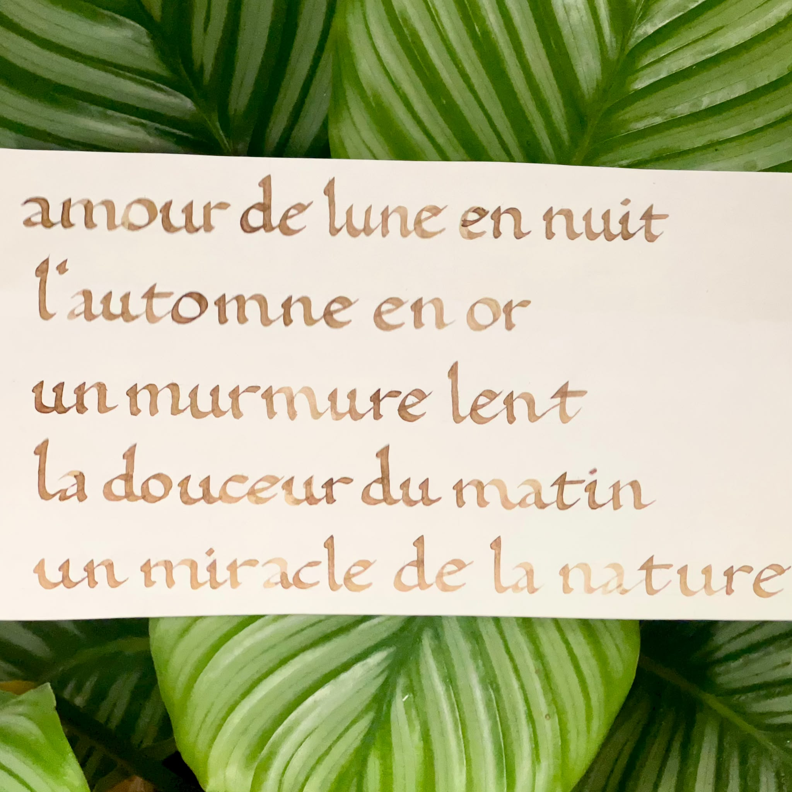
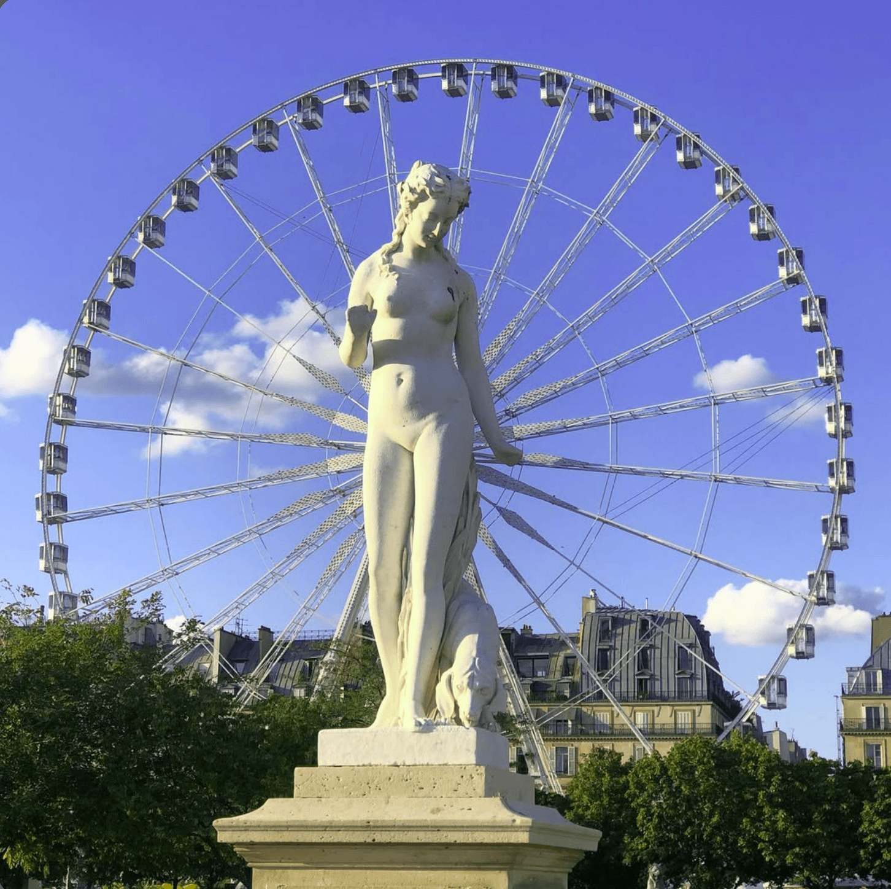
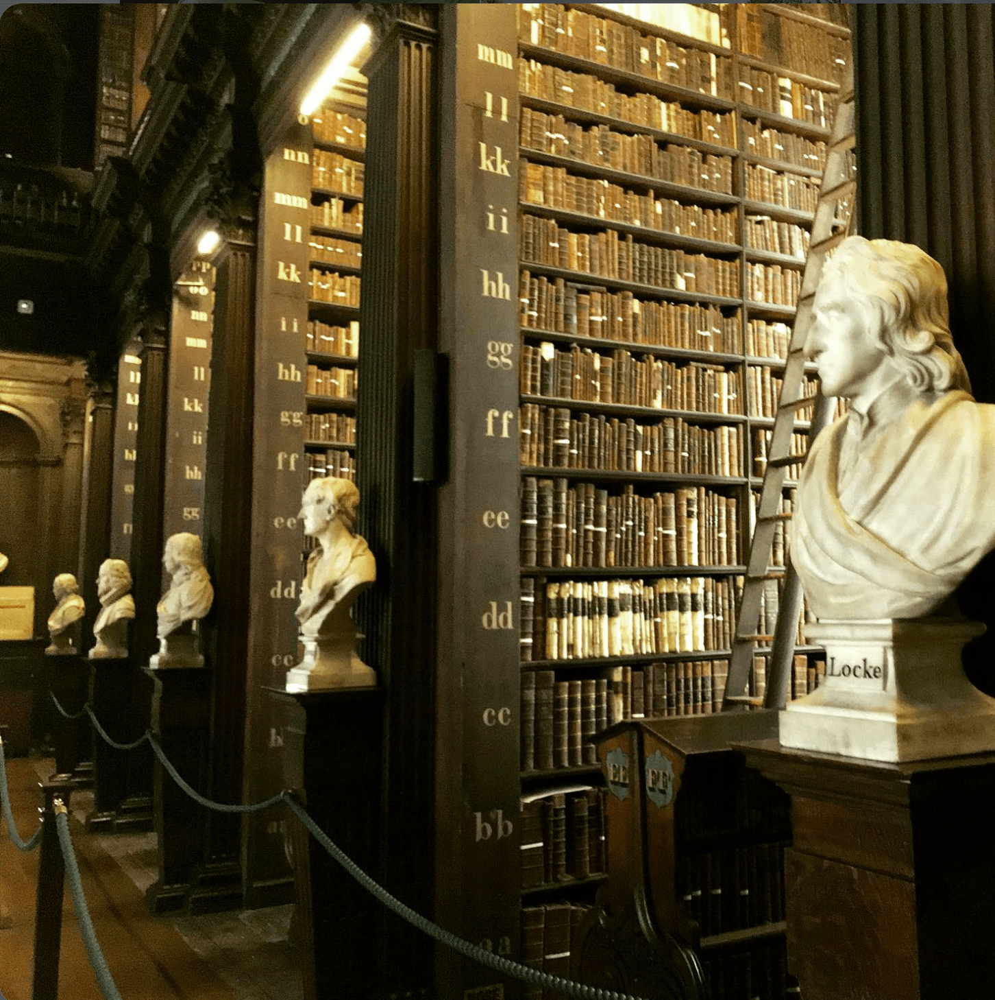
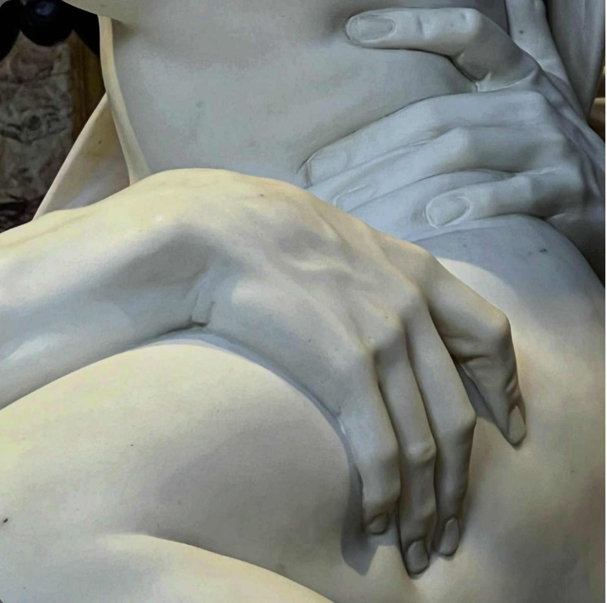

Pratiques Visuelles
Un œil attentif à la composition, à la typographie et à la lumière. Ces pratiques artistiques personnelles (calligraphie, photographie) nourrissent ma créativité, ma sensibilité graphique et mon approche rigoureuse de la mise en page.
Calligraphie & Sensibilité Typographique
Curieuse d'explorer le dessin de la lettre, je m'initie à la calligraphie à mes heures perdues. Bien que ce soit un passe-temps et que je sois encore en plein apprentissage, cette pratique manuelle me fascine. Elle affine mon œil et m'aide à mieux comprendre l'anatomie de la lettre, les pleins et déliés, ainsi que l'équilibre des espaces blancs lors de mes travaux de mise en page en PAO.

Photographie & Composition Visuelle
Sélection de photographies personnelles illustrant mon travail sur le cadrage, les lignes de fuite et la colorimétrie. Cette attention portée à l'image me permet d'intégrer des visuels percutants et bien équilibrés dans mes projets de communication graphique, comme ce fut le cas pour les supports du projet Sliding Doors.


